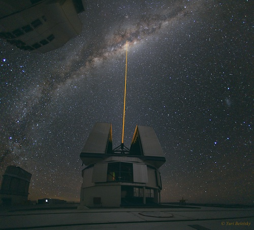

PHY217: Observational Astronomy Course Overview

Astronomical Techniques (PHY217) is a compulsory first-semester course for second-year undergraduates doing dual-honours Physics and Astrophysics or Physics and Astrophysics with Study Abroad (BSc or MPhys). It has now been superseded by PHY241. This material remains online for reference only.